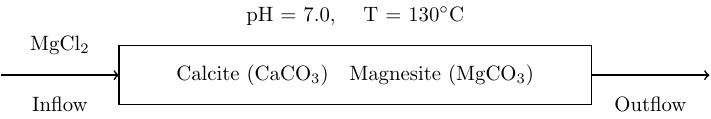
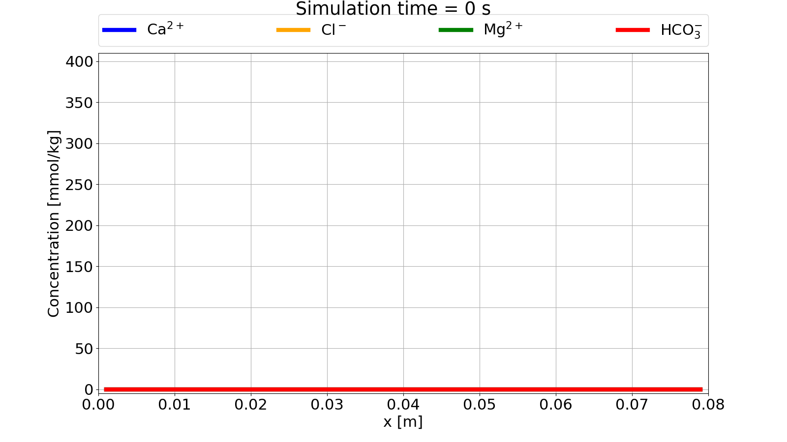
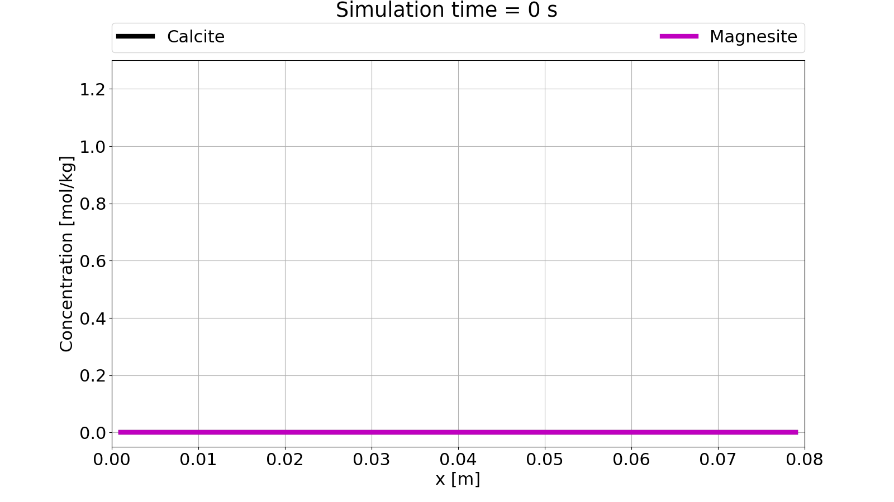
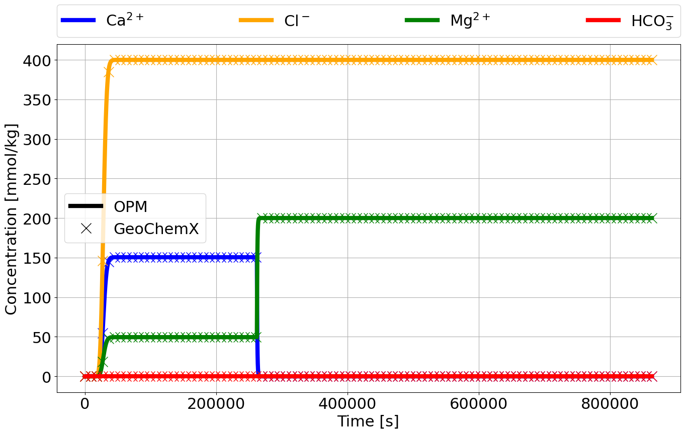

This tutorial showcase mineral reactions in a simple 1D core flood simulation. The core is initially filled with water and calcite in equilibrium. As the core is flooded with magnesite chloride from left to right, calcite is completely dissolved and magnesite is precipitated in a one-to-one ratio.

The core flood simulatino is run in OPM Flow as a single phase, water flow with wells for in- and outflow of water with chemical species. Since the chemical species does not affect the properties of the fluid, this is in essence a tracer transport problem with local chemical equilibrium calculations.
We will only point out selected keywords necessary to set up the reactive transport, and refer to the OPM Flow manual for other keywords encountered in the full deck.
Geochemistry is activated using the GEOCHEM keyword:
RUNSPEC
[...]
GEOCHEM
1* 1e-7 1e-8 CHARGE /The first item is a JSON file name for all inputs to the geochemical solver that are not passed through the deck (not needed in this example). The second and third item are material balance and pH convergence tolerances, while the forth item forces charge balance in the geochemical equilibrium solver.
The transported species are defined with the SPECIES
keyword in the PROPS section:
PROPS
[...]
SPECIES
CA CL H HCO3 MG /The species are as follows:
CA: calcium (Ca2+)
CL: chlorine (Cl-)
H: hydrogen (H+)
HCO3: bicarbonate (HCO3-)
MG: magnesium (Mg2+)
The minerals are defined in the MINERAL keyword in the
PROPS section:
PROPS
[...]
MINERAL
CAL MGS /The minerals have been given by their database “nickname”, and are as follows:
CAL: calcite (CaCO3)
MGS: magnesite (MgCO3)
A full list of accepted minerals in the geochemistry solver can be found here.
Minerals given in MINERAL
cannot be more than 8 characters long! Use mineral nicknames (if
possible) in such cases.
Initial conditions for the transported species are given with the
SBLK<name> keyword, where <name>
must be the same as given in SPECIES:
SOLUTION
[...]
SBLKCA
40*0.0 /
SBLKH
40*1.0 /
SBLKMG
40*0.0 /
SBLKCL
40*0.0 /
SBLKHCO3
40*0.0 /We see that all species, except H, are initialized with
zero concentration, since they will either be calculated from the
minerals or injected in the wells.
The initial conditions for the minerals are given in terms of weight
fractions relative to the rock. Internally, the initial concentration of
minerals and species are done during an initial equilibrium solve. The
weight fractions are given in the MBLK<name> keyword,
where <name> must be the same as given in
MINERAL:
SOLUTION
[...]
MBLKCAL
40*0.005 /
MBLKMGS
40*0.0 /The weight percentage must sum to 1.0, hence
any remaining weight percent that is not given in MINERAL
is defined as a standard sandstone with a set density.
If the <name> of the
mineral is more than 4 characters long, only the first four characters
are used in MBLK<name> or
MVDP<name>. This is due to the limitation that the
total number of characters for a keyword in OPM Flow cannot be longer
than 8 characters. An error will be given if the first four characters
for two (or more) minerals are the same (e.g. magnesite and magnetite).
Using nicknames for minerals, as in this tutorial, might be safest to
avoid naming conflicts!
The in- and outflow of water (with aqueous species) are handled by
standard well keywords (see OPM Flow manual), but
injection of calcium chloride is given by WSPECIES in the
SCHEDULE section:
SCHEDULE
[...]
WSPECIES
INJ MG 0.2 /
INJ CL 0.4 /
/The OPM Flow deck is run using the
flow_onephase_geochemistry binary with flags to limit time
steps, due to explicit scheme for reactive transport, and output of
geochemistry variables for visualization:
flow_onephase_geochemistry --enable-opm-rst-file=true --solver-max-time-step-in-days=2e-3 MG_CC.DATA


Command line for running the .dat file with GeoChemX:
GeoChemX TRANSPORT mg_cc.datA file labeled mg_ccOneDEff.out contains effluent
species concentrations and can be open in a CSV viewer, e.g. Excel.